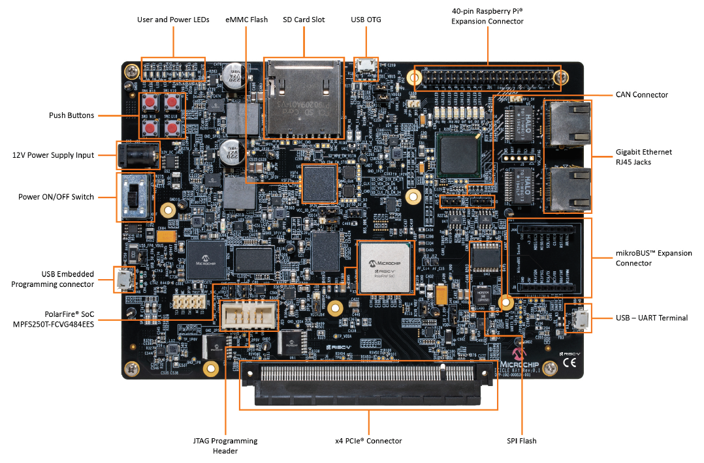

Lab Notebook Background
Welcome to my lab notebook, where I keep my public working notes, and any tips or tricks that I discover.
The idea for this "lab notebook" was inspired by:
It's built with mdbook and automatically published with mdbook-action. You can read more about how I setup the notebook in the 2020-12-19 - Lab Notebook Setup note. The source is available at bgianfo/lab-notebook. Please feel free to send pull requests if you see anything that's incorrect!
If you want to get in touch with me check out bjg.io/about.
12-29-2020: Lab Notebook Setup
Introduction
I've noticed a few people whom I follow and admire online have started to keep lab notebooks. I first ran across the idea when I saw @whitequark's notebook lab.whitequark.org, and then this evening I ran across @bitshiftmask's lab.jamesmunns.com by chance and saw they were doing a similar thing with mdbook which seems very easy to use and straight forward to setup and maintain.
I've been on a personal knowledge management kick recently, and I've been playing whit obsidian.md for maintaining a 'second brain'. The idea of a public lab notebook seems like an interesting idea that I want to play with. So this first post is going to be the process of setting this up.
Boot Strapping The Book
To get started with the notebook first I created a new GitHub repository github.com/bgianfo/lab-notebook.
Then I configured my lab notebook mdbook project just enough so that this page building.
C:\src\lab-notebook>tree /A /F
| .gitignore
| book.toml
| README.md
|
\---src
| SUMMARY.md
|
\---notes
2020-12-29.md
Once we have the shell of the project setup and can use mdbook serve to have the system automatically rebuild and refresh pages as we edit them:
C:\src\lab-notebook>mdbook serve
2020-12-29 03:02:15 [INFO] (mdbook::book): Book building has started
2020-12-29 03:02:15 [INFO] (mdbook::book): Running the html backend
2020-12-29 03:02:15 [INFO] (mdbook::cmd::serve): Serving on: http://localhost:3000
2020-12-29 03:02:15 [INFO] (warp::server): Server::run; addr=[::1]:3000
2020-12-29 03:02:15 [INFO] (warp::server): listening on http://[::1]:3000
2020-12-29 03:02:15 [INFO] (mdbook::cmd::watch): Listening for changes...
2020-12-29 03:02:22 [INFO] (mdbook::cmd::serve): Files changed: ["notes\2020-12-29.md"]
2020-12-29 03:02:22 [INFO] (mdbook::cmd::serve): Building book...
2020-12-29 03:02:22 [INFO] (mdbook::book): Book building has started
2020-12-29 03:02:22 [INFO] (mdbook::book): Running the html backend
Publishing
Now that we have the basics of the book building, I want to get the notebook published, and served off of my subdomain lab.bjg.io where nothing currently resides today. To make this as pain free as possible I was hoping to use github pages for this, the same as the rest of my site. When poking around I found the mdbook-action which allows you to painlessly publish your mdbook from a github actions workflow.
Following the documentation I was able to create a simple workflow (324781fae):
name: Publish To GitHub Pages
on:
push:
branches:
- master
jobs:
deploy:
runs-on: ubuntu-18.04
steps:
- uses: actions/checkout@v2
- name: Setup mdBook
uses: peaceiris/actions-mdbook@v1
with:
mdbook-version: 'latest'
- run: mdbook build
- name: Deploy
uses: peaceiris/actions-gh-pages@v3
with:
github_token: ${{ secrets.GITHUB_TOKEN }}
publish_dir: ./book
I looked for signs that the action ran, and nothing... so double checking the pipeline
I realized that GitHub created the new default branch as main, not master. So our
pipeline wasn't running because we are listening for push events on the wrong branch.
Announcement: https://github.com/github/renaming
So we need one small change to our pipeline to fix things up:
commit 78fd8a787cf6a2f49eca8e402eb6aede9caad174
Author: Brian Gianforcaro <b.gianfo@gmail.com>
Date: Tue Dec 29 03:17:52 2020 -0800
CI: Fix to modern branch name
diff --git a/.github/workflows/deploy.yml b/.github/workflows/deploy.yml
index cf0fa96..7707376 100644
--- a/.github/workflows/deploy.yml
+++ b/.github/workflows/deploy.yml
@@ -3,7 +3,7 @@ name: Publish To GitHub Pages
on:
push:
branches:
- - master
+ - main
That worked and automatically created a new gh-pages branch in the repository.
In the GitHub repository settings I was then able to configure github pages
to use the new gh-pages branch. See: GitHub Docs: Managing a custom domain for your GitHub Pages site
I then configured github pages to publish under a custom domain (lab.bjg.io), this
will automatically create a new CNAME
file in the root of your project. Next I went to by DNS provider and added a new
CNAME record to my domain configuration pointing lab.bjg.io -> bgianfo.github.io.
And Voila! It Alive!
Well kind of ... As soon as I pushed new changes, the sub domain no longer works. That is very strange?
After some digging in the CI logs, I realized that the actions-gh-pages action was
deleting the CNAME file in the gh-pages branch on every push, breaking the configuration.
I looked through the docs for the gh-pages action and found they have their own
option for auto generating the CNAME file from within the action. So I made a
small change to use that option:
commit 2f5c50ad033f4db4401ba7ddf427306ed326ab2e
Author: Brian Gianforcaro <b.gianfo@gmail.com>
Date: Tue Dec 29 04:10:11 2020 -0800
CI: Configure CNAME when generating html and publishing to gh-pages
diff --git a/.github/workflows/deploy.yml b/.github/workflows/deploy.yml
index 7707376..1364391 100644
--- a/.github/workflows/deploy.yml
+++ b/.github/workflows/deploy.yml
@@ -23,3 +23,4 @@ jobs:
with:
github_token: ${{ secrets.GITHUB_TOKEN }}
publish_dir: ./book
+ cname: lab.bjg.io
Git Commit Signing with Keybase
I already have a keybase account. I've been interested in getting git commit signing setup with my keybase pgp key. I quickly found a nice guide that worked well. See: https://meedamian.com/post/keybase-signed-github
After following the guide, git now shows my commits as signed. Example:
bgianf@LMAO:~/src/lab-notebook/src$ git log --show-signature -1
commit be372efa95c64ef4a71e2b06e69baf47d275923f (HEAD -> main, origin/main, origin/HEAD)
gpg: Signature made Tue Dec 29 21:14:34 2020 PST
gpg: using RSA key 899C11E2EEAA2EEE43775D148802D4B232E81AFA
gpg: checking the trustdb
gpg: marginals needed: 3 completes needed: 1 trust model: pgp
gpg: depth: 0 valid: 1 signed: 0 trust: 0-, 0q, 0n, 0m, 0f, 1u
gpg: Good signature from "Brian Gianforcaro (http://bjg.io) <b.gianfo@gmail.com>" [ultimate]
gpg: aka "keybase.io/bjg <bjg@keybase.io>" [ultimate]
Author: Brian Gianforcaro <b.gianfo@gmail.com>
Date: Tue Dec 29 21:12:47 2020 -0800
Notes: Add note about signing commits with keybase pgp keys
GitHub displays these with the VERIFIED qualifier.
See: https://github.com/bgianfo/lab-notebook/commit/be372efa95c64ef4a71e2b06e69baf47d275923f
Nice!
Compiling SerenityOS Kernel with -ftrivial-auto-var-init
Introduction
In recent years the industry has collectively decided that it's probably time we do something to address the various bugs that can occur from uninitialized stack memory. A few examples of bug classes that can originate from uninitialized stack memory include:
-
Kernel information disclosure, where uninitialized struct members or struct padding is copied back to usermode, leaking kernel information such as stack or heap addresses, or secret data like stack cookies.
-
Control flow based on uninitialized memory can cause a variety of issues at at runtime, including stack corruptions like buffer overflows, heap corruptions due to deleting stray pointers. Even basic logic bugs can result from control flow operating on uninitialized data.
TODO: Add more history from the "Automatic initialization of variables section https://isopenbsdsecu.re/mitigations/missing_features/
In 2018 JF Bastien contributed "Automatic variable initialization" to LLVM and later presented that work in 2019 with his "Mitigating Undefined Behavior" talk at the LLVM Developers Meeting.
At CppCon 2019 Joe Bialek and Shayne Hiet-Block presented their
"Killing Uninitialized Memory: Protecting the OS Without Destroying Performance”
talk which describes the /initAll mechanism that was built into the MSVC compiler
and integrated into the windows build system to combat uninitialized stack memory bugs
throughout the windows kernel and hyper visor stack.
SerenityOS attempts to employ a variety of security mitigations to harden the system against would be attackers. I was interested in pursuing some sort of stack zeroing mechanism to mitigate this entire bug class in the SerenityOS kernel. SerenityOS utilizes GCC (version 11.2 at the time of writing) as it's primary toolchain, with secondary support for Clang+LLVM available as well.
So I started researching what options were available for GCC.
Forward porting...
With a little bit of effort I was able to backport the GCC -ftrivial-auto-var-init
feature and the subsequent related fixes to the SerenityOS GCC 11.2 toolchain.
First we needed the original commit which contains the majority of the implementation.
commit cd5638353ee77f6c5c072f6ca9a19d77ad2f2bf8
Author: Brian Gianforcaro <bgianf@serenityos.org>
Date: Sat Sep 11 08:27:12 2021 -0700
Toolchain: Backport -ftrivial-auto-var-init to our GCC 11.2 toolchain
This change back ports the patch to support -ftrivial-auto-var-init so
that it compiles on top of the 11.2 release. It was originally committed
to target the GCC 12 release cycle. The back porting was just fixing up
patch collisions, no major surgery was needed.
When trying to compile Serenity with a newly built toolchain with just the first patch applied I immediately ran into an ICE (Internal Compiler Error). I put the project on hold for a few days and decided to see if the issue had been reported upstream already. Much to my surprise it had, and there was already a fix available in the GCC development branch.
Toolchain: Backport `__builtin_clear_padding` fix to gcc 11.2
commit 463ce32c0edd689f56b619a9eeabc77cc44b528c
Author: Brian Gianforcaro <bgianf@serenityos.org>
Date: Sun Oct 3 03:07:40 2021 -0700
Toolchain: Backport '__builtin_clear_padding' fix to gcc 11.2
This change backports a fix for a bug which previously would cause us
to ICE when compiling the Kernel, with this patch we continue chugging
along.
While investigating I also found a few other ICE fixes that it looked like we should really have if we were going to ever merge this to master, so I took care of porting those as well.
Toolchain: Backport 'avoid auto-init of empty types' fix to gcc 11.2
commit 8ddf95bb4fc61482fda8d7460c208c43873131ab
Author: Brian Gianforcaro <bgianf@serenityos.org>
Date: Sat Sep 11 09:05:07 2021 -0700
Toolchain: Backport 'avoid auto-init of empty types' fix to gcc 11.2
This is a follow up fix to the main `-ftrivial-auto-var-init` patch
that we need as well. This patch didn't require any work to apply.
Toolchain: Backport 'avoid ICE with auto-init and nested functions' fix
commit 41ec4ff60a0e5d04171631ccdadeeb147a4e86aa
Author: Brian Gianforcaro <bgianf@serenityos.org>
Date: Sat Sep 11 09:14:53 2021 -0700
Backport 'avoid ICE with auto-init and nested functions' fix
This is a follow up fix to the main `-ftrivial-auto-var-init` patch
that we need as well. This patch didn't require any work to apply.
After finding all the fixes I needed to backport in order to get the system to actually build without crashing the compiler, I was eager to try it out. The following patch is all that was needed to integrate the new compiler flag into the SerenityOS Kernel build system.
commit bf59bf2d0fb3e3b7745e60ddde715a175d7b1c3d
Author: Brian Gianforcaro <bgianf@serenityos.org>
Date: Sat Sep 11 09:17:06 2021 -0700
CMake: Enable `-ftrivial-auto-init=pattern` in the Kernel
diff --git a/Kernel/CMakeLists.txt b/Kernel/CMakeLists.txt
index 1f1c529018..ffd067d289 100644
--- a/Kernel/CMakeLists.txt
+++ b/Kernel/CMakeLists.txt
@@ -409,6 +409,10 @@ if (CMAKE_CXX_COMPILER_ID STREQUAL "GNU")
if (CMAKE_CXX_COMPILER_VERSION VERSION_GREATER_EQUAL "11.1")
# Zero any registers used within a function on return (to reduce data lifetime and ROP gadgets).
add_compile_options(-fzero-call-used-regs=used-gpr)
+
+ # Auto initialize trivial types on the stack. Note: This isn't natively supported by the GCC 11 series.
+ # It was back ported for serenity, see Toolchain/Patches/gcc-ftrivial-auto-var-init.patch
+ add_compile_options(-ftrivial-auto-var-init=pattern)
endif()
link_directories(${TOOLCHAIN_ROOT}/${SERENITY_ARCH}-pc-serenity/lib)
link_directories(${TOOLCHAIN_ROOT}/lib/gcc/${SERENITY_ARCH}-pc-serenity/${GCC_VERSION}/)
diff --git a/Kernel/Prekernel/CMakeLists.txt b/Kernel/Prekernel/CMakeLists.txt
index dbf1d8be8f..bf361e1aa2 100644
--- a/Kernel/Prekernel/CMakeLists.txt
+++ b/Kernel/Prekernel/CMakeLists.txt
@@ -88,4 +88,5 @@ install(FILES "${CMAKE_CURRENT_BINARY_DIR}/Prekernel" DESTINATION boot)
get_target_property(PREKERNEL_TARGET_OPTIONS ${PREKERNEL_TARGET} COMPILE_OPTIONS)
list(REMOVE_ITEM PREKERNEL_TARGET_OPTIONS "-fsanitize-coverage=trace-pc")
list(REMOVE_ITEM PREKERNEL_TARGET_OPTIONS "-fsanitize=kernel-address")
+list(REMOVE_ITEM PREKERNEL_TARGET_OPTIONS "-ftrivial-auto-var-init=pattern")
set_target_properties(${PREKERNEL_TARGET} PROPERTIES COMPILE_OPTIONS "${PREKERNEL_TARGET_OPTIONS}")
Investigation
After booting the system and seeing it crash, I attached a debugger to QEMU and saw that we now have a Undefined Behavior Sanitizer crash on startup while detecting which processor features are available.
(gdb) bt
#0 __ubsan_handle_type_mismatch_v1 (data=..., ptr=...)
#1 0xc1460d63 in operator() (f=..., __closure=...)
#2 Kernel::Processor::cpu_detect (this=...)
#3 0xc1461a4d in Kernel::Processor::cpu_setup (this=...)
#4 0xc1462f39 in Kernel::Processor::early_initialize (this=..., cpu=...)
#5 0xc145e886 in Kernel::init (boot_info=...)
#6 0x0010309d in Kernel::init ()
Research into KASAN in SerenityOS
Introduction
Kernel Address Sanitizer (KASAN) is a dynamic analysis technology to find dynamic memory errors in OS Kernels. It's based on instrumentation injected by the compiler which checks all memory accesses made during execution.
I'm interested in enabling KASAN for SerenityOS
Links:
- Linux KASAN Docs
- Linux KASAN Presentation
- LWN "The kernel address santizer"
- NetBSD KASAN Blog
- NetBSD KASAN Presentation
Here's the NetBSD presentation:
Lets start hacking!
So my first attempt at doing anything was to just throw in -fsanitize=kernel-address and see
what falls out. Here's the first diff:
diff --git a/Kernel/CMakeLists.txt b/Kernel/CMakeLists.txt
index 451060bf2..c7d9e5bec 100644
--- a/Kernel/CMakeLists.txt
+++ b/Kernel/CMakeLists.txt
@@ -268,6 +268,7 @@ set(CMAKE_CXX_FLAGS "${CMAKE_CXX_FLAGS} -pie -fPIE -fno-rtti -ffreestanding -fbu
set(CMAKE_CXX_FLAGS "${CMAKE_CXX_FLAGS} -mno-80387 -mno-mmx -mno-sse -mno-sse2")
set(CMAKE_CXX_FLAGS "${CMAKE_CXX_FLAGS} -fno-asynchronous-unwind-tables")
set(CMAKE_CXX_FLAGS "${CMAKE_CXX_FLAGS} -fstack-protector-strong")
+set(CMAKE_CXX_FLAGS "${CMAKE_CXX_FLAGS} -fsanitize=kernel-address")
set(CMAKE_CXX_FLAGS "${CMAKE_CXX_FLAGS} -nostdlib -nostdinc -nostdinc++")
add_link_options(LINKER:-T ${CMAKE_CURRENT_BINARY_DIR}/linker.ld -nostdlib)
We compile successfully with the new flag, but we fail to link. The linker complains about about a bunch of missing __asan_load{n}_noabort functions.
... snip ...
./Build/Kernel/././AK/OwnPtr.h:140: undefined reference to `__asan_load4_noabort'
./Build/Kernel/././AK/NonnullOwnPtr.h:124: undefined reference to `__asan_load4_noabort'
./Build/Kernel/././Kernel/VM/RangeAllocator.h:48: undefined reference to `__asan_load4_noabort'
./Build/Kernel/././AK/OwnPtr.h:116: undefined reference to `__asan_handle_no_return'
./Build/Kernel/././AK/NonnullOwnPtr.h:124: undefined reference to `__asan_load4_noabort'
./Build/Kernel/././Kernel/VM/RangeAllocator.h:48: undefined reference to `__asan_load4_noabort'
./Build/Kernel/././AK/NonnullOwnPtr.h:124: undefined reference to `__asan_load4_noabort'
./Build/Kernel/././Kernel/VM/RangeAllocator.h:49: undefined reference to `__asan_load4_noabort'
... snip ...
Looking at NetBSD's implementation of KASAN shows that they have common handler macros for these functions.
Excerpt from sys/kern/subr_asan.c:
#define ASAN_LOAD_STORE(size) \
void __asan_load##size(unsigned long); \
void __asan_load##size(unsigned long addr) \
{ \
kasan_shadow_check(addr, size, false, __RET_ADDR);\
} \
void __asan_load##size##_noabort(unsigned long); \
void __asan_load##size##_noabort(unsigned long addr) \
{ \
kasan_shadow_check(addr, size, false, __RET_ADDR);\
} \
void __asan_store##size(unsigned long); \
void __asan_store##size(unsigned long addr) \
{ \
kasan_shadow_check(addr, size, true, __RET_ADDR);\
} \
void __asan_store##size##_noabort(unsigned long); \
void __asan_store##size##_noabort(unsigned long addr) \
{ \
kasan_shadow_check(addr, size, true, __RET_ADDR); \
}
I guess I'll need to stub out these symbols for serenity when I get time to work on this further.
Enabling stack canaries for SerenityOS
Introduction
I've been looking into beefing up static and dynamic analysis available in
SerenityOS. One of the most basic things that
wasn't enabled yet was GCC's -fstack-protector feature, which automatically
inserts a stack canary
in the epilog of all functions.
osdev-wiki: Stack Smashing Protector
Which variant to use?
There are three different variants of -fstack-protector, each with different
pros and cons. Kees Cook has a nice writeup on
the specifics of -fstack-protector-strong and it's design on his blog.
The ARM Clang Compiler Reference Guide
has a nice overview of the different variants of -fstack-protector and their impact.
-fno-stack-protector disables stack protection.
-fstack-protector enables stack protection for vulnerable functions that contain:
* A character array larger than 8 bytes.
* An 8-bit integer array larger than 8 bytes.
* A call to alloca() with either a variable size or a constant size bigger
than 8 bytes.
-fstack-protector-all adds stack protection to all functions regardless of
their vulnerability
-fstack-protector-strong enables stack protection for vulnerable functions
that contain:
* An array of any size and type.
* A call to alloca().
* A local variable that has its address taken
It appears to me that -fstack-protector-strong would be great compromise for
Serenity OS.
Bootstrapping the Implementation
The actual change to the build system is (of course) very simple:
diff --git a/CMakeLists.txt b/CMakeLists.txt
index 7597e97fab..df039d3f82 100644
--- a/CMakeLists.txt
+++ b/CMakeLists.txt
@@ -125,9 +125,7 @@ if (CMAKE_SYSTEM_NAME MATCHES Darwin)
set(CMAKE_SKIP_RPATH TRUE)
endif()
-#FIXME: -fstack-protector
-
-add_compile_options(-Os -g1 -fno-exceptions -Wno-address-of-packed-member -Wundef -Wcast-qual -Wwrite-strings -Wimplicit-fallthrough -Wno-nonnull-compare -Wno-deprecated-copy -Wno-expansion-to-defined)
+add_compile_options(-Os -g1 -fno-exceptions -fstack-protector-strong -Wno-address-of-packed-member -Wundef -Wcast-qual -Wwrite-strings -Wimplicit-fallthrough -Wno-nonnull-compare -Wno-deprecated-copy -Wno-expansion-to-defined)
add_compile_options(-ffile-prefix-map=${CMAKE_SOURCE_DIR}=.)
add_compile_definitions(DEBUG SANITIZE_PTRS)
The system compiles, but fails to link after adding the new flag. The link errors look something like:
[1/948] Linking CXX shared library Libraries/LibC/libc.so
FAILED: Libraries/LibC/libc.so
../Libraries/LibC/stdlib.cpp:1062: undefined reference to `__stack_chk_fail_local'
It looks like we need to expose this symbol in the Serenity LibC implementation
so that the compile generated function epilogue code can call it. It turns out
that there was some previous work here, and I just needed to extended it to get
it working again. This is what I came up with:
diff --git a/Libraries/LibC/cxxabi.cpp b/Libraries/LibC/cxxabi.cpp
index cc920dec89..05978bfe9b 100644
--- a/Libraries/LibC/cxxabi.cpp
+++ b/Libraries/LibC/cxxabi.cpp
@@ -24,7 +24,6 @@
* OF THIS SOFTWARE, EVEN IF ADVISED OF THE POSSIBILITY OF SUCH DAMAGE.
*/
-#include <AK/Types.h>
#include <assert.h>
#include <stdio.h>
#include <stdlib.h>
@@ -87,11 +86,4 @@ void __cxa_finalize(void* dso_handle)
ASSERT_NOT_REACHED();
}
-extern u32 __stack_chk_guard;
-u32 __stack_chk_guard = (u32)0xc6c7c8c9;
-
-[[noreturn]] void __stack_chk_fail()
-{
- ASSERT_NOT_REACHED();
-}
} // extern "C"
diff --git a/Libraries/LibC/ssp.cpp b/Libraries/LibC/ssp.cpp
new file mode 100644
index 0000000000..c2715d6ba0
--- /dev/null
+++ b/Libraries/LibC/ssp.cpp
@@ -0,0 +1,55 @@
+#include <AK/Types.h>
+#include <stdio.h>
+#include <stdlib.h>
+#include <sys/internals.h>
+#include <unistd.h>
+
+extern "C" {
+
+extern u32 __stack_chk_guard;
+u32 __stack_chk_guard = (u32)0xc6c7c8c9;
+
+[[noreturn]] void __stack_chk_fail()
+{
+ dbgprintf("Error: Stack protector failure, stack smashing detected!\n");
+ if (__stdio_is_initialized)
+ fprintf(stderr, "Error: Stack protector failure, stack smashing detected!\n");
+ abort();
+}
+
+[[noreturn]] void __stack_chk_fail_local()
+{
+ __stack_chk_fail();
+}
+
+} // extern "C"
diff --git a/Libraries/LibC/sys/internals.h b/Libraries/LibC/sys/internals.h
index 70443404e1..c23785a02e 100644
--- a/Libraries/LibC/sys/internals.h
+++ b/Libraries/LibC/sys/internals.h
@@ -43,5 +43,6 @@
void __cxa_finalize(void* dso_handle);
[[noreturn]] void __cxa_pure_virtual() __attribute__((weak));
[[noreturn]] void __stack_chk_fail();
+[[noreturn]] void __stack_chk_fail_local();
__END_DECLS
Getting Sidetracked with Linking
Compiling again with the new __stack_chk_fail_local implementation available
in LibC, we surprisingly failed again with the same error. On closer inspection
it's actually slightly different, we successfully linked LibC but now we are
failing to link a different library LibDiff that depends on LibC:
[334/1280] Linking CXX shared library Libraries/LibDiff/libdiff.so
FAILED: Libraries/LibDiff/libdiff.so
../Libraries/LibDiff/Hunks.cpp:113: undefined reference to `__stack_chk_fail_local'
../Libraries/LibC/stdlib.cpp:1062: undefined reference to `__stack_chk_fail_local'
I started debugging what was going on, so lets see what is ending up in the final
library. We can see that the __stack_chk_fail_local symbol is in the library but
notice the symbols flagged l instead of g like __stack_chk_fail is flagged:
$ objdump -t Libraries/LibC/libc.so | rg __stack_chk_fail
0001ea58 l F .text 00000015 __stack_chk_fail_local
0001ea08 g F .text 00000050 __stack_chk_fail
The symbol table flags can be decoded using the objdump(1)
man page:
The flag characters are divided into 7 groups as follows:
"l"
"g"
"u"
"!" The symbol is a local (l), global (g), unique global (u),
neither global nor local (a space) or both global and
local (!). A symbol can be neither local or global for a
variety of reasons, e.g., because it is used for
debugging, but it is probably an indication of a bug if
it is ever both local and global. Unique global symbols
are a GNU extension to the standard set of ELF symbol
bindings. For such a symbol the dynamic linker will make
sure that in the entire process there is just one symbol
with this name and type in use.
So somehow the __stack_chk_fail_local symbol is getting marked local (l) instead
of global (g) like most other symbols in the application. After researching around
online I ran across the following thread
which provides some useful insight into how the stack protector support is supposed
to be linked into applications when running on Linux:
Date: Tue, 11 Sep 2018 15:07:50 +0200
From: Szabolcs Nagy <nsz@...t70.net>
To: musl@...ts.openwall.com
Subject: Re: undefined reference to __stack_chk_fail_local (x86)
* Matias Fonzo <selk@...gora.org> [2018-09-11 09:27:45 -0300]:
> Bootstrapping Dragora (distro) reflects an error trying to build the
> kernel headers using musl 1.1.20:
>
> Running build() ...
> UPD include/generated/uapi/linux/version.h
> HOSTCC scripts/basic/fixdep
> /tmp/ccONBchp.o: In function `read_file':
> fixdep.c:(.text+0x12a): undefined reference to `__stack_chk_fail_local'
> /tmp/ccONBchp.o: In function `main':
> fixdep.c:(.text.startup+0x6e2): undefined reference to
> `__stack_chk_fail_local' /tools/lib32/gcc/i586-linux-musl/bin/ld:
> scripts/basic/fixdep: hidden symbol `__stack_chk_fail_local' isn't
> defined /tools/lib32/gcc/i586-linux-musl/bin/ld:
> final link failed: Bad value collect2: error: ld returned 1 exit status
> make[1]: *** [scripts/Makefile.host:90: scripts/basic/fixdep] Error 1
> make: *** [Makefile:464: scripts_basic] Error 2 Return status = 2
>
this happens because on i386 and powerpc gcc emits _local_ calls
to __stack_chk_fail_local which means it has to be defined within
the same module that you are linking (not in libc.so).
(that symbol should either call the extern __stack_chk_fail in
libc.so or just crash)
this should have been done by libgcc.a having a definition for
this symbol (since the compiler is using it), but instead it got
added to glibc libc_nonshared.a which is added to the link command
by using a linker script in place of libc.so.
musl does not want to copy that hack, so the usual workaround is
to make gcc pass -lssp_nonshared to the linker when stack-protector
is in use and then have a libssp_nonshared.a with the appropriate
definition. (this is what alpine linux does)
you can also do this manually or disable ssp with -fno-stack-protector,
it may also work if a preincluded header declared it as weak
so undefined weak reference would just become 0 (and crash at runtime
which is the intended behaviour), but i havent tested that.
After reading this I modified the CMake changes I had made to include my new
spp.cpp file into LibC to factor it out into it's own static library
that can be automatically inserted as a dependent library whenever LibC is linked:
diff --git a/Libraries/LibC/CMakeLists.txt b/Libraries/LibC/CMakeLists.txt
index 3366957d5d..971880ca00 100644
--- a/Libraries/LibC/CMakeLists.txt
+++ b/Libraries/LibC/CMakeLists.txt
@@ -71,13 +71,21 @@
)
+add_library(ssp STATIC ssp.cpp)
set(SOURCES ${LIBC_SOURCES} ${AK_SOURCES} ${ELF_SOURCES})
serenity_libc_static(LibCStatic c)
-target_link_libraries(LibCStatic crt0)
+target_link_libraries(LibCStatic crt0 ssp)
add_dependencies(LibCStatic LibM)
set(CMAKE_CXX_FLAGS "${CMAKE_CXX_FLAGS} -static-libstdc++")
serenity_libc(LibC c)
-target_link_libraries(LibC crt0)
+target_link_libraries(LibC crt0 ssp)
add_dependencies(LibC LibM)
With these changes the system now compiles and links cleanly!
Testing
Now that we have the system compiling, lets write test program to make sure we can actually crash the program when a stack smash is detected. The program should overwrite a buffer on the stack:
#include <cstdio>
static void smasher(char* string)
{
#pragma GCC diagnostic push
#pragma GCC diagnostic ignored "-Warray-bounds"
for (int i = 0; i < 256; i++) {
string[i] = 'A';
}
#pragma GCC diagnostic pop
}
static void stack_to_smash()
{
char string[8] = {};
smasher(string);
}
int main()
{
puts("[+] Starting the stack smash...");
stack_to_smash();
puts("[+] Stack smash wasn't detected!");
return 0;
}
If we compile this, and boot into serenity and run our program what happens?
courage ~ $ ./user/Tests/LibC/stack-smash
[+] Starting the stack smash ...
[+] Stack smash wasn't detected!
Hrm... that's not good, what's going on?
After looking at the disassembly it's obvious, the stack_to_smash() call is being
completely in-lined and optimized out.
$ objdump -M intel --disassemble=main Userland/Tests/LibC/stack-smash
Userland/Tests/LibC/stack-smash: file format elf32-i386
00000510 <main>:
510: 8d 4c 24 04 lea ecx,[esp+0x4]
514: 83 e4 f0 and esp,0xfffffff0
517: ff 71 fc push DWORD PTR [ecx-0x4]
51a: 55 push ebp
51b: 89 e5 mov ebp,esp
51d: 53 push ebx
51e: e8 82 00 00 00 call 5a5 <__x86.get_pc_thunk.bx>
523: 81 c3 e5 13 00 00 add ebx,0x13e5
529: 51 push ecx
52a: 83 ec 0c sub esp,0xc
52d: 8d 83 a1 ee ff ff lea eax,[ebx-0x115f]
533: 50 push eax
534: e8 97 ff ff ff call 4d0 <puts@plt>
539: 8d 83 c1 ee ff ff lea eax,[ebx-0x113f]
53f: 89 04 24 mov DWORD PTR [esp],eax
542: e8 89 ff ff ff call 4d0 <puts@plt>
547: 8d 65 f8 lea esp,[ebp-0x8]
54a: 31 c0 xor eax,eax
54c: 59 pop ecx
54d: 5b pop ebx
54e: 5d pop ebp
54f: 8d 61 fc lea esp,[ecx-0x4]
552: c3 ret
We can add __attribute__((noinline)) to our function definitions to instruct
the compiler to not inline calls to our test functions:
#include <cstdio>
// Note: Needs to be 'noline' so stack canary isn't optimized out.
static void __attribute__((noinline)) smasher(char* string)
{
#pragma GCC diagnostic push
#pragma GCC diagnostic ignored "-Warray-bounds"
for (int i = 0; i < 256; i++) {
string[i] = 'A';
}
#pragma GCC diagnostic pop
}
// Note: Needs to be 'noline' so stack canary isn't optimized out.
static void __attribute__((noinline)) stack_to_smash()
{
char string[8] = {};
smasher(string);
}
int main()
{
puts("[+] Starting the stack smash...");
stack_to_smash();
puts("[+] Stack smash wasn't detected!");
return 0;
}
After re-compiling we can see the compiler instrumentation in the binary now,
note the injected calls to __stack_chk_fail_local in the disassembly of _ZL14stack_to_smashv:
$ objdump -M intel --disassemble=main Userland/Tests/LibC/stack-smash
Userland/Tests/LibC/stack-smash: file format elf32-i386
00000690 <main>:
690: 8d 4c 24 04 lea ecx,[esp+0x4]
694: 83 e4 f0 and esp,0xfffffff0
697: ff 71 fc push DWORD PTR [ecx-0x4]
69a: 55 push ebp
69b: 89 e5 mov ebp,esp
69d: 53 push ebx
69e: e8 87 00 00 00 call 72a <__x86.get_pc_thunk.bx>
6a3: 81 c3 29 15 00 00 add ebx,0x1529
6a9: 51 push ecx
6aa: 83 ec 0c sub esp,0xc
6ad: 8d 83 1d ee ff ff lea eax,[ebx-0x11e3]
6b3: 50 push eax
6b4: e8 67 ff ff ff call 620 <puts@plt>
6b9: e8 1c 02 00 00 call 8da <_ZL14stack_to_smashv>
6be: 8d 83 3d ee ff ff lea eax,[ebx-0x11c3]
6c4: 89 04 24 mov DWORD PTR [esp],eax
6c7: e8 54 ff ff ff call 620 <puts@plt>
6cc: 8d 65 f8 lea esp,[ebp-0x8]
6cf: 31 c0 xor eax,eax
6d1: 59 pop ecx
6d2: 5b pop ebx
6d3: 5d pop ebp
6d4: 8d 61 fc lea esp,[ecx-0x4]
6d7: c3 ret
000008c6 <_ZL7smasherPc>:
8c6: 55 push ebp
8c7: 89 c2 mov edx,eax
8c9: b9 00 01 00 00 mov ecx,0x100
8ce: b0 41 mov al,0x41
8d0: 89 e5 mov ebp,esp
8d2: 57 push edi
8d3: 89 d7 mov edi,edx
8d5: f3 aa rep stos BYTE PTR es:[edi],al
8d7: 5f pop edi
8d8: 5d pop ebp
8d9: c3 ret
000008da <_ZL14stack_to_smashv>:
8da: e8 41 00 00 00 call 920 <__x86.get_pc_thunk.ax>
8df: 05 ed 12 00 00 add eax,0x12ed
8e4: 55 push ebp
8e5: 89 e5 mov ebp,esp
8e7: 53 push ebx
8e8: 83 ec 14 sub esp,0x14
8eb: 8d 98 28 00 00 00 lea ebx,[eax+0x28]
8f1: c7 45 ec 00 00 00 00 mov DWORD PTR [ebp-0x14],0x0
8f8: c7 45 f0 00 00 00 00 mov DWORD PTR [ebp-0x10],0x0
8ff: 8b 03 mov eax,DWORD PTR [ebx]
901: 89 45 f4 mov DWORD PTR [ebp-0xc],eax
904: 31 c0 xor eax,eax
906: 8d 45 ec lea eax,[ebp-0x14]
909: e8 b8 ff ff ff call 8c6 <_ZL7smasherPc>
90e: 8b 45 f4 mov eax,DWORD PTR [ebp-0xc]
911: 2b 03 sub eax,DWORD PTR [ebx]
913: 74 05 je 91a <_ZL14stack_to_smashv+0x40>
915: e8 5a 00 00 00 call 974 <__stack_chk_fail_local>
91a: 83 c4 14 add esp,0x14
91d: 5b pop ebx
91e: 5d pop ebp
91f: c3 ret
With these changes we can see the system catches the corruption as expected:
courage ~ $ ./user/Tests/LibC/stack-smash
[+] Starting the stack smash ...
Error: Stack protector failure, stack smashing detected!
Shell: Job 1 (/usr/Tests/LibC/stack-smash) Aborted
Final PR
The resulting pull request is here: Build + LibC: Enable -fstack-protector-strong in user space
Writing CodeQL Queries for SerenityOS
I previously added CodeQL static analysis support to the SerenityOS build workflow. https://github.com/SerenityOS/serenity/pull/4175
Unfortunately you there doesn't seem to be a way to consume the CodeQL database that as part of that build pipline on GitHub. This seems like a bit of an oversight, and I have raised an issue here: https://github.com/github/codeql-action/issues/355
To work around that we will need to create our own database so we can write some custom CodeQL queries.
Here are the steps I put together:
-
Setup a clone of the VSCode Starter Workspace (docs)
$ git clone https://github.com/github/vscode-codeql-starter.git $ cd vscode-codeql-starter $ git submodule update --init --remote -
Build a codeql database for serenity OS (docs):
$ codeql database create -l cpp -s /home/bgianf/src/serenity -c "make -j -C /home/bgianf/src/serenity/BuildMake" ~/serenity-codeql -
Install the VS Code CodeQL extension (docs)
-
Configure the VS Code CodeQL extension to point to your new database (
~/serenityy-codeql) -
Open the
vscode-codeql-starterworkspace in VS Code. -
Open the
cpp/example.qlquery and start writing queries and executing them against the database.This simple example finds all classes in the
AKstandard library in SerenityOS:import cpp from Class c where c.getQualifiedName().matches("AK::%") select base.getQualifiedName()
12-29-2020: Initial Setup of the PolarFire SOC Icicle Kit
Introduction
I picked up the PolarFire SOC Icicle Kit during the crowd funding phase on Crowd Supply I've been playing around with the hardware off and on since I got it,

Useful Links:
MicroChip Docs:
seL4 Port:
Forums:
Script for terminal attach
After attaching with minicom manually a few times, I eventually found the script below, it comes from the seL4 Test o the PolarFire SOC documentation. It works pretty well, and uses tio (which I find much more pleasant to work with) instead of minicom.
#!/bin/bash
tmux new-session -d -s 'polarfire-serial-dashboard'
tmux split-window -v
tmux split-window -h
tmux select-pane -t 0
tmux split-window -h
tmux respawn-pane -t0 -k "tio /dev/ttyUSB0"
tmux respawn-pane -t1 -k "tio /dev/ttyUSB1"
tmux respawn-pane -t2 -k "tio /dev/ttyUSB2"
tmux respawn-pane -t3 -k "tio /dev/ttyUSB3"
tmux select-layout tiled
tmux set -g mouse on
tmux attach-session -t 'polarfire-serial-dashboard'
I've also setup the scripts as a gist here: PolarFire SOC Icicle Gists
First Boot
After getting everything figured out I was able to boot, attached to all of the UART serial consoles attached, and interact with the linux login.

I was a little excited at this point, so I announced my accomplishment to the world:
Finally got around to playing with my Polarfire SoC Icicle Kit. Screenshot is minicom attached to all 4 (!) UART serial debug consoles. riscv64 running linux for now, want to play with the seL4 port though. Maybe an attempt to port #serenityos? üòÉ #riscv #polarfire pic.twitter.com/q9EF98NhF3
— Brian Gianforcaro (@bgianf) November 26, 2020